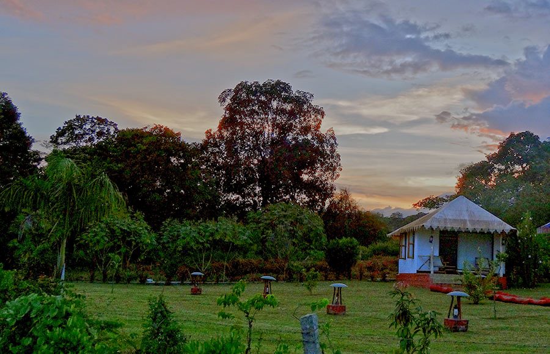

“We welcome you with open arms to our native land, Coorg! Stay with us for a glimpse of traditional village life, try your hand at farming on our rice paddies, and adopt our organic way of life for just a few days. We promise you the space and time to revel in the beauty of nature.”
~Narendra, host at the organic farm stay in Coorg.
Please email us at untravel@indiauntravelled.com to plan and book your travels.
Overview
The best way to experience a place is to see it through the lens of the locals, and in Karnataka’s coffee country, we offer just that.
Coorg (traditionally called Kodagu) offers a great introduction to village life in Karnataka. Scattered amid its richly forested terrain and lush coffee estates, are quaint little villages with rice paddies, maize fields, small streams, and seasonal waterfalls. Chikkabattageri is one such village, where time slows down to let you appreciate the little joys of life – watching silver butterflies dance above the fields, cycling along sleepy hamlets and picturesque coffee plantations, and getting slushy in the rice paddies!
Far from the popular townships, in a typical Coorgi village near Kushalnagar, a local family has set up an organic oasis by their rice paddies. Five beautifully handcrafted huts overlook the paddies and the hills beyond, their interiors designed with much love using only naturally or locally sourced materials – pumpkin lamp shades, earthen pots, biodegradable soaps, bamboo decor, and such. You wake up to the chirping of birds and colourful butterflies, indulge in delicious organic fusion Coorgi-South Indian food, hear tales of the jungle tribes of Coorg, and discover its lesser known sights and sounds.
Outdoor enthusiasts can ride the mountain bikes to the nearby villages or hike into the surrounding forests. Coffee connoisseurs can trace the journey of coffee from seed (leaves?) to cup. Culinary enthusiasts can learn Kodava recipes passed on for generations. You can drive the scenic route to peaceful Tibetan monasteries; meet a hobbyist beekeeper to taste the tastiest honeys; put on your gum boots and help sow or harvest the rice paddies; or just lie back on your balcony and soak in the beauty of life on the countryside.
Please email us at untravel@indiauntravelled.com to plan and book your travels.
- Sunsets from the rice paddies
- Overview of the farm stay
- The huts at sunset
- The lounge area at the farm
- The rice paddies
Stay
Accommodation is provided in five handcrafted huts, their roofs fitted with recycled fiberboard and covered with canvas to survive the rains. Each hut comes with a balcony and lounge chairs, which overlooks the farm and the rice paddies beyond; a perfect spot to watch butterflies and birds in the early mornings and evenings.
The rooms are beautifully furnished with all things naturally or locally sourced - comfortable wooden beds, wooden coat racks, bamboo lampshades, and wall paintings made by village artists in Kerala. All basic amenities are provided in the attached bathroom; western toilets, shower and steel buckets, biodegradable soaps, and natural shampoo. A small part of the bathroom roof is made of fiber, to allow natural light to pour in during the day.
The open lounge and dining area is made with natural hay roofing, with lounge chairs, lampshades carved out of pumpkin, and a small vegetable garden in front.
Please email us at untravel@indiauntravelled.com to plan and book your travels.


{kind=link}
{kind=link}
{kind=link}
{kind=link}
{kind=link}
{kind=link}
{kind=link}
{kind=link}
{kind=link}
Food & Drinks
Brace yourself for some delicious vegetarian fare! Breakfast consists of traditional akki rotis (made of rice flour and heated over coals) served with honey, jaggery, and home-cooked chutneys. Neer dosas are another breakfast specialty in Coorg, cooked with rice flour and water (little or no oil), and served with coconut chutney. Continental dishes like bread, eggs, jam, butter and cheese are also available.
Dinner consists of a mix of Coorgi and South Indian dishes, prepared with seasonal vegetables and ingredients – rice dumplings, phulkas, rice cakes or rice noodles are served with vegetable curries, banana and jackfruit chutneys, and rasam. Local food is traditionally spicy, powered with bird eye chillies, which are a healthy alternative to commercial chillies; the cooks are happy to modify the spice levels as per your taste buds!
Payassum is traditionally served for dessert, in different kinds of preparations, like rice payassum flavored with jaggery, jaggery payassum flavoured with cinnamon. Difficult as it might be, make sure you leave space for the warm, sumptuous deserts!
All food is prepared fresh in the in-house kitchen, and most local dishes are cooked in earthen pots, on a traditional chulha-style appliance with coal fire. As far as possible, organic ingredients are used in the cooking, including organic oil, rice, wheat flour, vegetables and fruits.
Breakfast and dinner are served from the kitchen, and lunch can be prepared on special request.
Please email us at untravel@indiauntravelled.com to plan and book your travels.
{kind=link}
{kind=link}
{kind=link}
{kind=link}
Activities
There’s so much to do in Coorg, but don’t try to squeeze it all into one trip! Take time to soak in the beauty from your balcony and spot birds, wear gum boots and splash in the rice paddies at sunset, join your host for a drink and hear stories about life in Coorg, go on long walks, read, write, paint draw, do the things you love to do but never get the time for..
Activities at and around the farm include:
- Transplanting on the rice paddies (June 15-August 15)
- Harvesting the rice paddies (December)
- Visit to a coffee plantation
- Tracing the journey of coffee from seed to cup
- Cycling in the nearby villages
- Forest walk to the backwaters
- Off roading through Coorg’s secret trails (monsoon only)
- Participate in the Lhosar festival at the nearby Tibetan camp (February)
Offbeat things to do in Coorg:
- Drive through Dubare towards Madikeri, a scenic drive with coffee estates, dense forests, valleys, waterfalls and hills in the backdrop
- Visit the lesser known monasteries in the Tibetan camp at Byllakuppe
- Visit the elephant camp at Dubare and meet the Kuruba forest tribe
- Visit traditional Coorgi villages in the dense forests near Hattihole
- Meet a hobbyist beekeeper and taste Coorg’s best honey!
Please email us at untravel@indiauntravelled.com to plan and book your travels.
{kind=link}
{kind=link}
{kind=link}
{kind=link}
{kind=link}
{kind=link}
{kind=link}
Costs
Prices at Narendra's Organic Farm start at:
Hut on twin sharing: INR 6800 including Breakfast, Dinner, Cycles and Taxes.
Solo traveller: INR 4800 including Breakfast, Dinner, Cycles and Taxes.
Extra bed: INR 1,500 per person, inclusive of breakfast
Please email us at untravel@indiauntravelled.com to plan and book your travels.
Location
The farm stay is located in the village of Chikkabattageri in Coorg. The nearest towns are Kushalnagar and Byllakuppe, and Madikeri, the capital of Coorg, is a half hour drive away.
The nearest bus stop is at Kushalnagar, which is well connected to the rest of Karnataka, with frequent Volvo and state buses to Bangalore and Mysore. The bus takes roughly 7 hours from Bangalore, and takes a scenic route through the coffee countryside. From Kushalnagar, the farm is a 10-15 minute car ride away and a pick up can be arranged from here.
The nearest domestic and international airports are in Bangalore.
Best time to visit
Coorg is good for a trip all round the year.
During winter (November to February), the days are warm, while the early mornings and evenings are chilly. This is an eventful time in Coorg, when the rice paddies are harvested during the harvest festival. There’s no joy like warming up over a cup of hot Coorgi coffee over a cool winter night.
In the monsoon season (July to August), the rains lash the coffee country and waterfalls appear in the coffee plantations. Everything is lush green, and if off-roading is your thing, there’s no better time to visit!
During summer (April to June), the days warm up considerably, but mornings and evenings remain pleasant.
Things to note:
- Cash and ATMs: Only cash is accepted at the farm. The nearest ATM is located in the town of Kushalnagar, 9 km away.
- Food: Only organic vegetarian food is available.
- Bathrooms: Each room comes with an attached bathroom, with running hot water and western style toilets.
- Electricity: Power cuts are infrequent but please be prepared by carrying torches and spare batteries as needed.
- Phone, Internet and TV: There are no TVs or Wifi, but plenty of natural beauty and interaction with the hosts to keep you entertained. Most phone networks work well.
- Pets: At your own risk and responsibility.
- Alcohol: Not provided.
Checklist
Many of us have pre-conceived notions about rural India. Leave them behind, travel with an open mind, and you'll be pleasantly surprised with what you find.
- Warm clothes if you're travelling in winter
- Sunscreen
- Walking shoes
- Books to read and write, stationery to paint and draw, basically anything you love to do and never get the time for
- Binoculars for bird watching
- Cosmetics you need
- Prescription medicines, if any
- Camera & batteries / charger
Please email us at untravel@indiauntravelled.com to plan and book your travels.
Photo Gallery
- Sunsets from the rice paddies
- Overview of the farm stay
- The huts at sunset
- The lounge area at the farm
- The rice paddies
 Interiors of the huts
Interiors of the huts- View from the balcony
- Sunsets on the farm
- The farm kitchen
- Well Furnished Bathroom
- Aki roti being cooked on the coals
- Neer Dosa with chutney
- Rice dumplings, chutneys, curries and phulkas for dinner
- Aki roti with chutney, honey and jaggery
- Meeting monks from lesser known monasteries in Bylakuppe
- Seasonal waterfalls in Coorg
- Sowing and harvesting
- Splashing on the rice paddies in gum boots
- Tasting the best honey in Coorg
- Cycling along the maize fields
- Visit to the coffee plantations
Please email us at untravel@indiauntravelled.com to plan and book your travels.
Reviews
“The stay was great. Narendra is a great host. I'll be back there soon. No room for improvement. Food too was excellent. Thanks for the great stay! My first experience with your team was very good.”
~ Priya Chetty, travelled in January 2016
“The cottage was awesome and Narendra gave us a warm welcome. We had very delicious food of different varieties. The Paddy fields which was surrounded were amazing scenic beauty. It was like we were cut for a few days from the city or town tensions. As a part of our anniversary they made a special arrangement for cake cutting. Narendra and his Family was one the best hosts we have had.
~ Kaushik Gampa, travelled in August 2015
“The place is surrounded by lush green paddy fields the added advantage here is it has only 5 cottages ensuring unperturbed serenity with only chirping sounds of birds and creaking sounds of trees. The cottages are cosy and comfortable with urban comforts and an organic touch! Drinking water is served in earthen pots, brass mug and bucket for bathing. It really took me back in time reminding me of my castor oil and soap nut powder bathing days. Our host Narendra and Shalini were a very friendly and warm couple who ensured we were comfortable and always ready to accommodate.”
Read more about Mayura's experience on her blog here.
~ Mayura, travelled with her family in October 2014.
“Just want you to know that we had a wonderful weekend at Narendra's. Amazing ambiance, great food and such lovely company. Thank you for bringing such an awesome place to the limelight.”
~ Navmi, travelled with her family in November 2013.
To feature your review / testimonial, please write to untravel@indiauntravelled.com.
Please email us at untravel@indiauntravelled.com to plan and book your travels.
Responsible Travel
Narendra’s passionately believes in all things organic, and it reflects in every little part of the farm. The huts are handcrafted with recycled fiberboard roofs, covered with canvas, and furnished with locally or naturally sourced décor and amenities. The lounge area is built with hay roofs, the pathways are fitted with terracotta tiles, and wild plants and flowers are nurtured all over the farm. All food provided on the farm is organically grown or sourced, including the oil, wheat flower, rice, vegetables and fruits.
Solar power is being used for most electricity needs, with plans to erect a small wind turbine on the far end of the farm. An indigenous bioculture technology is being employed to recycle wastewater generated from the huts. The rice paddies are sustained without fertilizers or pesticides.
Below are some tips to travel responsibly while in Coorg:
- Pack your bags with environmentally friendly things. Carry as little plastic as possible.
- Do not leave behind any non-biodegradable waste.
- What you wear has an impact – environmentally and culturally – dress ethically and appropriately, especially when you visit the nearby villages and monasteries.
- Respect the local culture and refrain from physical intimacy in public places.
- Carry a good water bottle. Filtered water is available at the house for refilling your bottle. Refrain from buying numerous plastic mineral water bottles.
- Local food is great. Try it as much as possible and avoid packaged food. Ask for modifications in the food according to your taste, instead of wasting it.
- Avoid excessive consumption of alcohol and refrain from drugs, especially in public places.
- Seek permission before photographing people, so as to respect their privacy.
- Do not pluck any plants & flowers, and do not disturb the wildlife.
Please email us at untravel@indiauntravelled.com to plan and book your travels.
Please email us at untravel@indiauntravelled.com to plan and book your travels.